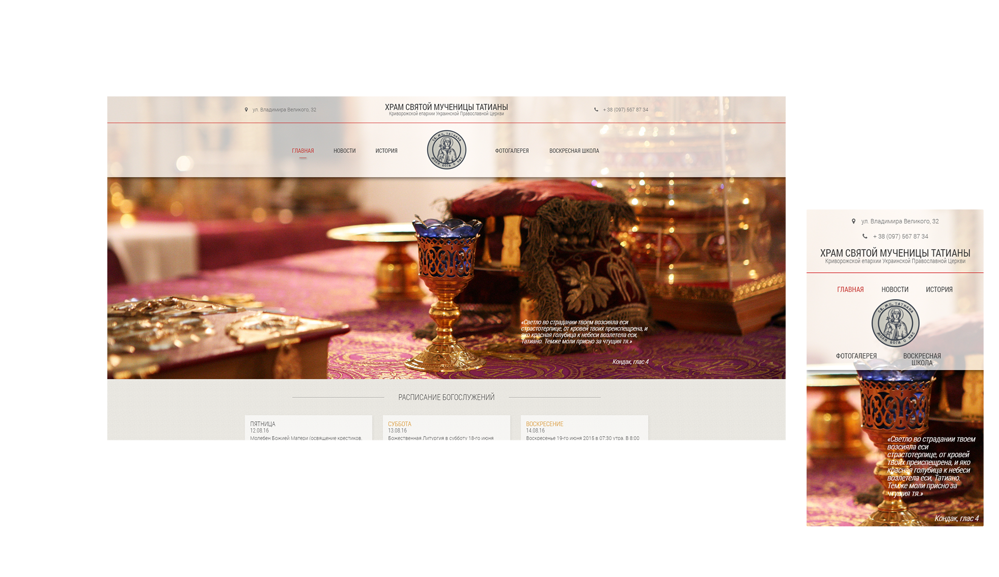

Church of the St.Tatiana
"Teach me, Lord, not to love anything and no one so firmly as you are!"
Status:
finished
Type:
website
Duty:
ui/ux design
front-end
Description:
A responsive, multipage website for an orthodox church in Kryvyi Rih, Ukraine. The church is named after the Holy Martyr Tatiana.
Visual preview

